개요
에픽 #286 W1 산출물입니다. 왼쪽 BEFORE 는 지금 코드가 실제로 그리는 화면을 찍은 스크린샷이고
(목업이 아니라 apps/web/e2e/p286-before-capture.capture.ts 가 백엔드 없이 390px 로 캡처한 것),
오른쪽 AFTER 는 눌러볼 수 있는 개편안 프로토타입입니다.
구현은 아직 한 줄도 하지 않았습니다 — 이 보드를 컨펌받고 시작합니다.
보실 때
- AFTER 안의 노란 줄 박스는 설계 의도 주석입니다(제품 화면에는 안 들어갑니다). 위 [설계 주석 표시]로 끌 수 있습니다.
- 숫자·이름·전적은 전부 가짜 예시 데이터입니다. 보실 건 배치와 흐름입니다.
- 2차 피드백 반영본입니다. 주신 답(연습 배치·복수 규칙 4개·모드별 전적·트레이드 설명)과 추가 요구(경기 중 잠금·덱 강화 진입·도감 전신)를 전부 넣었습니다 — ✅ 확정 / ❓ 남은 하나.
- 맨 위 ★ 홈 화면 전체 가 "전체 홈화면 디자인 어디있어?" 에 대한 답입니다.
★ 전체 홈 화면 — 질문에 먼저 답합니다
"홈화면은 별도로 있는 거 아니야?"
지금 안에서는 [게임] 탭이 곧 홈입니다. 발제문의 5탭이
게임·덱·선수·영입·내 정보 였고, 그 중 게임이 앱을 켜면 처음 뜨는 화면(= 현행 /lobby 자리)입니다.
아래가 홈 전체 디자인 한 장입니다(잘라내지 않았습니다).
다만 홈을 6번째 탭으로 따로 뺄 수도 있습니다 — 그러면 [홈]은 요약 대시보드, [게임]은 모드 선택 전용이 됩니다. 저는 합치는 쪽을 권장합니다: 탭이 6개가 되면 390px에서 라벨이 다시 좁아지고, 무엇보다 홈에 있을 것(팀 상태·오늘 할 일·경기)과 게임 탭에 있을 것(경기)이 거의 같아서 또 한 번 "인덱스의 중복"이 됩니다. 따로 빼길 원하시면 말씀만 주세요 — 5분이면 갈라집니다.
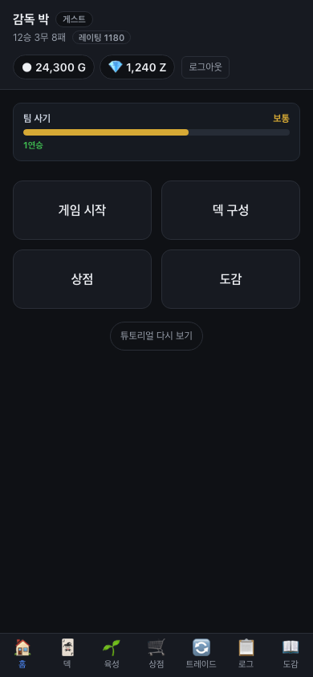
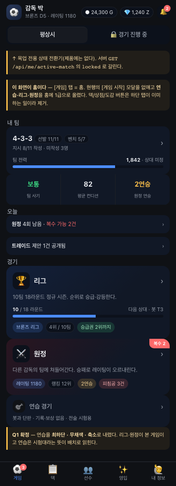
★ 경기 중에는 다른 걸 못 하게 (hero 2R)
요청: "홈화면에서 경기중이면 다른것들은 안되게하자. 경기 이어서하거나 포기해야해." + "게임중에는 (강화) 비활성화여야해. 버그가 있을수 있을거같아."
지금은 왜 위험한가 — 짚어 주신 게 맞습니다
현행 MatchLockGate(#217)는 누른 뒤에 되돌리는 방식입니다.
화면은 멀쩡히 다 보이고, 눌러서 이동한 다음에 경기로 튕겨냅니다. 그 사이에 강화·덱 편집이 실제로 들어갈 창이 있습니다.
경기 중 강화로 능력치가 바뀌면 진행 중인 시뮬레이션이 쓰는 값과 어긋납니다 — 말씀하신 "버그가 있을 수 있을 것 같다"가 이 자리입니다.
→ 개편안은 애초에 못 누르게 합니다: 홈은 [이어하기]/[경기 포기]만 남고 나머지 + 하단 탭 4개가 회색·자물쇠·클릭 불가. 덱은 배치·프롬프트는 열어 두되(하프타임 지시를 써야 하니) [⚡ 선수 강화] 줄만 잠급니다.
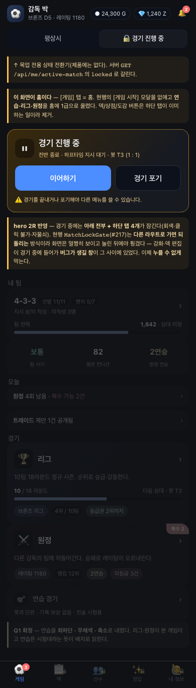
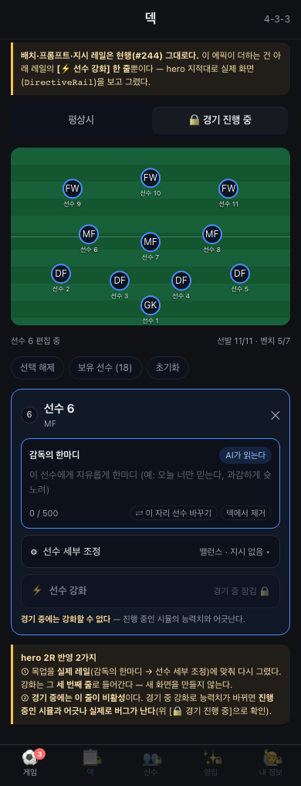
IA 변경 — 내비 7탭 → 5탭
hero 지적: "내비(인덱스)와 홈 화면이 더 확실하게 구분되어야 한다." 지금은 홈이 인덱스의 중복입니다 — 로비에 [덱 구성][상점][도감] 버튼이 있는데, 하단 탭바에도 덱·상점·도감이 그대로 또 있습니다. 홈은 홈이 되고, 이동은 탭바가 맡습니다.
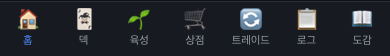
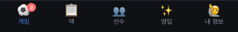
| 현행 탭 | 개편 후 | 처리 | 근거 |
|---|---|---|---|
| 홈(로비) | 게임 | 재설계 | 모드 선택 모달을 없애고 연습·리그·원정을 홈의 1급 카드로. 덱/상점/도감 버튼은 탭바와 중복이라 제거. |
| 덱 | 덱 | 유지 | 배치·프롬프트는 #244 골격 그대로. 선수 탭 → 강화 진입만 추가. |
| 육성 + 도감 | 선수 | 병합 | 두 화면은 이미 같은 코드다 — 같은 CodexPage.module.css·PlayerCard·CardGrowthDetail 을 쓰고 차이는 owned 필터뿐. 탭 두 칸을 쓸 이유가 없어 [보유]/[전체] 세그먼트로 대체. |
| 상점 + 트레이드 | 영입 | 병합 | hero 결정 — 둘 다 "선수를 새로 들이는" 행위. 상단 세그먼트로 한 화면. |
| 로그 | 내 정보 안으로 | 이동 | hero 지시. 로그는 목적지가 아니라 근거 — 순위·전적 아래에 붙습니다. |
| — | 리그 페이지 | 신설급 | 기존 /league 는 있지만 설명·하는 방법·라운드 진행·전체 랭킹보드가 없습니다. 그 넷을 얹습니다. |
| 모드 모달 안의 [원정] | 원정 페이지 | 신설 | 지금 원정은 모달 안의 버튼 하나라 설명·내 점수·랭킹·피침공 기록을 놓을 자리가 없습니다. |
| — | 복수 | 신규 게임 루트 | hero 발제. 원정 페이지 안에 큐로 삽니다. 규칙 ↓ |
| 운영(admin) | 그대로 | 유지 | admin 계정에만 6번째로 붙습니다(현행 동일). |
1. 게임 (홈)
현행 홈은 회색 버튼 4개입니다. 무엇을 할 수 있는지, 내 리그가 몇 라운드인지, 원정에서 무슨 일이 있었는지는 눌러 봐야 압니다. 개편 홈은 3개 모드 카드가 각자의 상태를 달고 있습니다 — 리그는 진행 라운드와 순위, 원정은 레이팅·랭킹·피침공 건수.
없어지는 것 — [게임 시작] 모달 2단
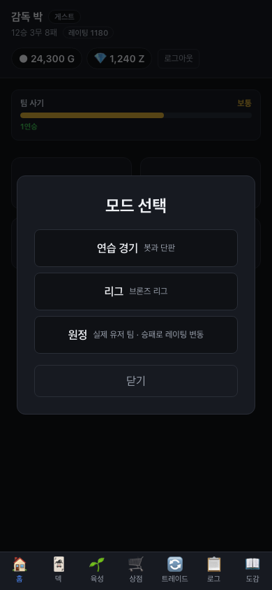
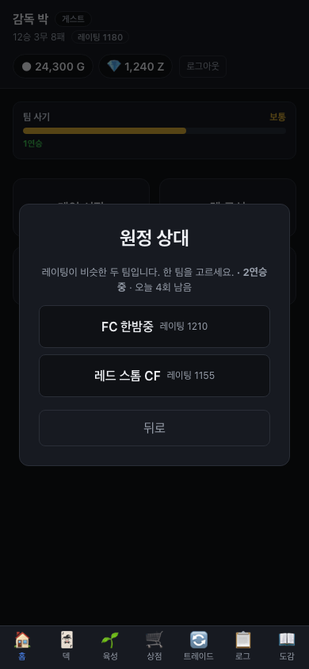
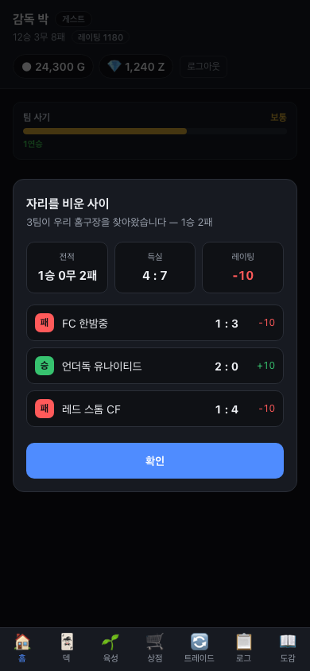
1-1. 리그 페이지
hero 요구: "리그 설명 + 하는 방법 안내 후 시작. 랭킹보드 준비. 리그 몇 판째 표시."
현행 /league 는 순위표·일정·보상은 있지만 설명이 0줄이고, 라운드 진행도 일정표를 세어야 알 수 있으며, 랭킹보드는 내 디비전 10팀이 전부입니다.
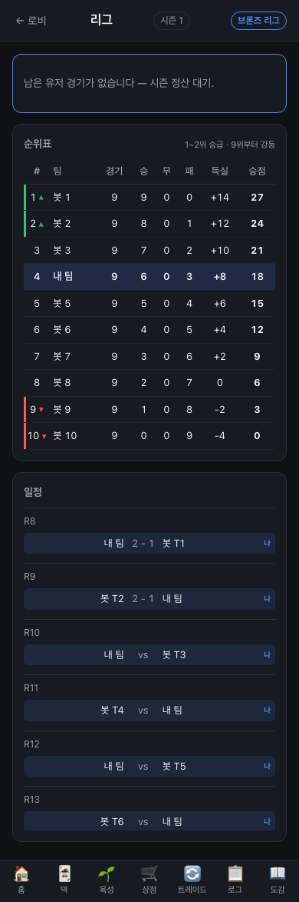
1-2. 원정 페이지 + 복수
hero 요구: "설명 + 내 점수 + 랭킹보드 + 최근 누가 침공했는지. 침공 기록 5개까지 → 누르면 그 상대에게 복수." 현행 원정은 모달 안의 버튼 하나라 이 정보들이 살 자리가 아예 없습니다. 피침공 기록도 팝업 한 번 보면 사라집니다(지난 리포트를 볼 화면이 없음 — 이건 #245 에서 이미 알려진 구멍입니다).
2. 덱 — 지시 레일에 [⚡ 선수 강화] 한 줄
지적하신 대로였습니다 — 1차 목업이 실제 화면을 안 보고 그렸습니다
"선수 누르면 프롬프트를 치거나 세부설정을 누를 수 있는데 여기서 강화탭도 사용가능하게 되는 거야.
개편된 게임 UI 최신버전 확인해" → #244로 개편된 실물(DirectiveRail)을 캡처해 다시 그렸습니다.
아래 왼쪽이 지금 실제로 나오는 화면입니다: 감독의 한마디(AI가 읽는다) → ⚙ 선수 세부 조정(역할·세부 지시).
개편안은 여기에 세 번째 줄 [⚡ 선수 강화]를 더하는 것뿐입니다 — 새 화면을 만들지 않습니다.
누르면 선수 탭과 같은 컴포넌트(CardGrowthDetail)가 열려 싱크가 구조로 보장됩니다.
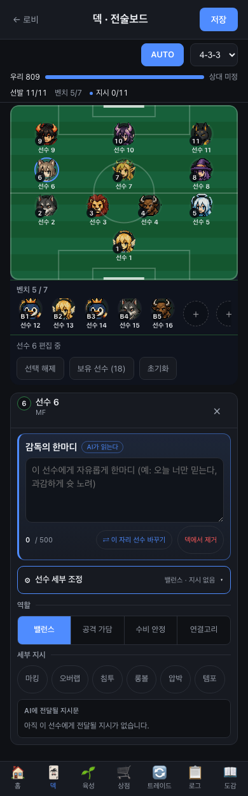
3. 선수 (도감)
hero 요구: "보유 선수 위주. 여기서도 업그레이드 가능(덱과 싱크). 미보유는 실루엣만. 보유만 / 전체 목록 전환."
조사에서 나온 사실 — 이건 신규 화면이 아니라 병합입니다
/growth(육성)과/codex(도감)는 같은 CSS·같은 카드·같은 강화 시트를 씁니다. 차이는 육성이owned로 거른다는 것과 도감에만 등급 필터가 있다는 것뿐입니다.- 미보유는 이미 회색조 + [잠금] 뱃지로 그려집니다. hero 가 말한 "실루엣"은 신규 표현이라기보다 더 확실한 실루엣화(검은 실루엣 + ???)입니다.
전신으로 바꿨습니다 — 다만 아셔야 할 게 하나 있습니다
"아이콘 아니라 전신 보여주자. 아이콘만 하면 모으는 재미가 떨어질 것 같아" → 반영했고, 아래 카드는 실제 발행 에셋입니다(가짜 그림 아님).
그런데 지금 아트가 이렇습니다 — 선수 180명에 그림은 23종뿐입니다:
- LEGEND·DIA 39명 — 전신 카드 아트 있음. 전신으로 바꾸면 확실히 좋아집니다.
- GOLD·SILVER·BRONZE 133명(74%) — 지금도 전원 같은 그림을 씁니다(공용
default-unit, 파란 셔츠 소년 하나). 전신으로 바꿔도 나빠지지 않지만 좋아지지도 않습니다. 오른쪽 [전체 40]에서 그 실태가 그대로 보입니다.
→ "모으는 재미"를 하위 등급까지 주려면 아트 발행이 필요합니다. 그건 이 에픽(web) 밖이라 data/design 쪽에 별도 이슈로 올리겠습니다. 화면은 지금 바꿔 두면 아트가 들어오는 순간 그대로 좋아집니다.
⚠️ 이 변경은 기존 정책을 뒤집습니다 — apps/web/CLAUDE.md 에 "도감은 어느 상태에서도
풀아트가 아니다"가 있고 계약(e2e/p3-card-art.spec.ts)이 밀집 UI 풀아트 0개를 강제합니다.
hero 결정이므로 문서와 계약을 같이 갱신하는 것을 구현 웨이브에 포함합니다.
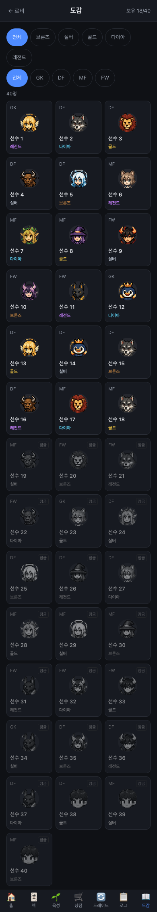
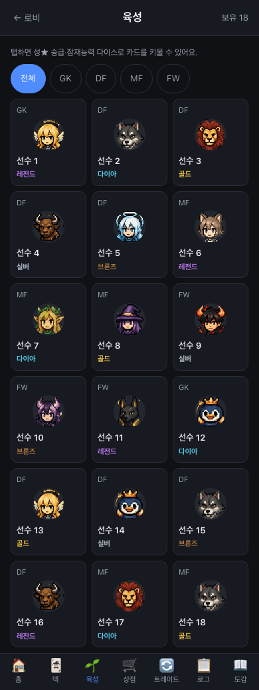
4. 영입 — 뽑기 + 트레이드 한 화면
hero 결정: "뽑기 + 트레이드 같은 화면(나중에 둘로 쪼갬). 튜토리얼에 트레이드 설명이 빠져 있으니 추가."
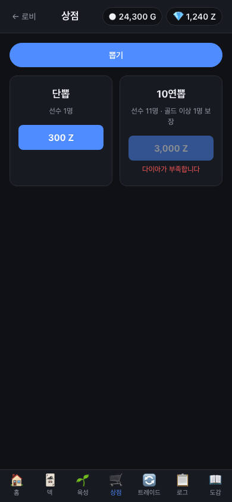
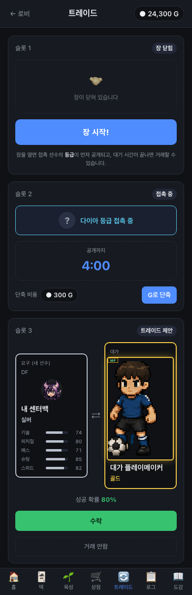
5. 내 정보
hero 요구: "로그를 이 탭으로 이동. 내 리그 순위·원정 순위·전적(롤 전적화면 느낌)."
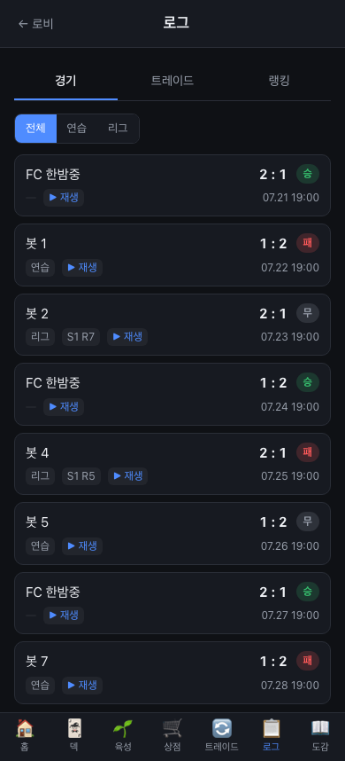
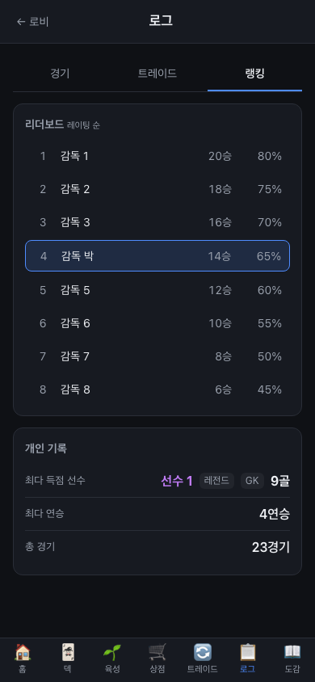
GET /api/rankings 는 이미 있습니다 — 승수 리더보드 + 내 순위 + 개인 기록. 재발명이 아니라 이동·확장입니다.복수 시스템 — 규칙과 상태
hero 발제: "침공 기록 5개까지 노출 → 누르면 그 상대에게 복수 1회. 이기면 큐에서 빠지고, 지면 2회까지."
⚠️ 먼저 알려 드릴 것 — 복수는 일부러 닫아 둔 문을 다시 여는 기능입니다
원정은 지금 상대를 고를 수 없습니다. 서버가 2명을 제시하고 그 안에서만 고릅니다. 이유가 코드에 적혀 있습니다 — "클라가 고른 id 를 그대로 믿으면 지목 원정이 되고, 그건 부계정을 반복 지목해 레이팅을 무한 생성하는 경로다(독립검증 4R 이 막은 그것)".
복수는 정의상 지목 원정입니다. 그래서 계약을 이렇게 잠급니다 —
서버가 "그 사람이 실제로 나를 쳤다"는 기록(away_reports 행)을 가지고 있을 때만 그 상대를 지목할 수 있고,
한 기록당 최대 2회이며 기록은 5건까지만 삽니다. 즉 부계정으로 무한 지목하려면 먼저 그 부계정이 나를 쳐야 하고, 그래도 2판이 끝입니다.
이 점을 넘기지 않고 짚는 이유는, 이게 밸런스가 아니라 어뷰징 경로라서입니다.
한 기록의 일생
[남이 나를 침공]
│ away_reports 행 생성 (defender=나)
│
├── 내가 방어 성공(WIN) ──▶ [방어함] 복수 불가 · 버튼 잠김 ← hero 확정 ④
│
▼ 내가 졌거나 비겼다
┌──────────────┐ 복수 승리 ┌───────────┐
│ 복수 가능 2회 │ ────────────▶ │ 완료(소멸) │ ← 목록에서 사라진다
└──┬────────┬──┘ └───────────┘
│ └── 복수 무승부 ──▶ 횟수 그대로(2회 유지) ← hero 확정 ①
│ 복수 패배
▼
┌──────────────┐ 복수 승리 ┌───────────┐
│ 복수 가능 1회 │ ────────────▶ │ 완료(소멸) │
└──┬────────┬──┘ └───────────┘
│ └── 복수 무승부 ──▶ 횟수 그대로(1회 유지)
│ 복수 패배
▼
┌──────────────┐
│ 소진(회색) │ ← 목록엔 남지만 못 누른다. 새 침공이 들어오면 6번째로 밀려 사라진다.
└──────────────┘
※ 어떤 경로든 **오늘 남은 원정 횟수를 1회 소모**한다(hero 확정 ②) — 무승부 무한 재도전이
열려 있어도 하루 총 판수는 그대로 묶인다. 이게 ①의 안전장치다.
| 규칙 | 안 |
|---|---|
| 큐 길이 | 최근 5건. 6번째 침공이 들어오면 가장 오래된 것이 밀려납니다(승리로 소멸한 것과 무관). |
| 시도 횟수 | 기록당 최대 2회. 1회차에 이기면 2회차는 없습니다. |
| 승리 시 | 기록이 완료로 닫히고 목록에서 사라집니다. |
| 패배 시 | 시도 1회 소모. 2회를 다 쓰면 소진(회색·비활성). |
| 무승부 | 확정 횟수를 쓰지 않는다 — 승부가 안 났으니 다시 침공 가능. |
| 판수 소모 | 확정 오늘 남은 원정 횟수를 같이 쓴다. |
| 레이팅 | 확정 보너스 없음 — 일반 원정과 동일. |
| 방어 성공한 침공 | 확정 복수 불가. 목록엔 [방어함]으로 남고 버튼은 잠깁니다. |
| 만료 | 시간 만료는 두지 않습니다(5건 슬라이딩 윈도우가 이미 자연 만료 역할). 필요하면 나중에 추가. |
서버 API 계약 초안 (server-java)
복수 큐·랭킹보드·전적은 지금 서버에 없습니다. 아래는 openapi 스케치이고,
구현은 컨펌 후 웨이브에서 합니다(프리즈 절차 준수 — docs/plan-v3/api/openapi-v2.yaml). 마이그레이션 번호는 merge-ready 시 main 이 배정합니다(현재 최신 V28).
신규 5개
| 엔드포인트 | 쓰는 화면 | 내용 |
|---|---|---|
GET /api/away/revenge | 원정 페이지 | 복수 큐 최대 5건 + 각 항목의 남은 시도 횟수. |
POST /api/away/revenge/{reportId}/matches | 원정 페이지 | 지목 복수 경기 생성. reportId 의 defender 가 호출자 본인일 때만 통과. |
GET /api/away/rankings | 원정 페이지 | 원정 레이팅 랭킹보드 + 내 순위. user_ratings 가 이미 있어 조회만 얹으면 됩니다. |
GET /api/league/rankings | 리그 페이지 | 디비전 통합 랭킹보드 + 내 순위. Q2 = 정렬 기준 |
GET /api/me/record | 내 정보 | 모드별 전적 + 최근 N경기 폼. 현행 /api/me 의 records 는 통합 1줄뿐입니다. |
스케치
GET /api/away/revenge → 200
{
"entries": [
{
"reportId": "R1",
"opponent": { "userId": "u9", "nickname": "FC 한밤중", "rating": 1210 },
"attackedAt": "2026-07-29T03:12:00Z",
"theirScore": 3, "myScore": 1, # 그때 결과(수비자 관점)
"defenceResult": "LOSS", # WIN|DRAW|LOSS — 내가 막았나
"ratingDelta": -10,
"attemptsUsed": 0, "attemptsMax": 2,
"state": "AVAILABLE" # AVAILABLE | EXHAUSTED | AVENGED
}
],
"remainingToday": 4 # 원정 일일 한도와 공유(Q3-②)
}
POST /api/away/revenge/{reportId}/matches → 201 { ...Match }
403 REVENGE_NOT_OWNED # 그 리포트의 defender 가 내가 아니다 ← 지목 어뷰징 차단의 핵심
409 MATCH_IN_PROGRESS # 기존 규약 그대로(detail.matchId 로 이어가기)
410 REVENGE_AVENGED # 이미 갚았다(승리로 닫힘)
429 REVENGE_EXHAUSTED # 2회 소진
429 AWAY_DAILY_LIMIT # 오늘 판수 소진(Q3-② 채택 시)
GET /api/away/rankings?limit=50 → 200
{
"seasonNo": 3,
"entries": [ { "rank": 1, "userId": "u3", "nickname": "철벽 유나이티드",
"rating": 1620, "streak": 9, "isMe": false } ],
"me": { "rank": 12, "rating": 1180, "streak": 2, "total": 143 }
}
GET /api/league/rankings?scope=global|division&limit=50 → 200
{
"entries": [ { "rank": 1, "userId": "u7", "nickname": "감독 최",
"division": 1, "divisionName": "다이아 리그",
"points": 52, "played": 18, "isMe": false } ],
"me": { "rank": 38, "division": 5, "points": 18, "total": 143 }
}
GET /api/me/record → 200
{
"overall": { "played": 23, "wins": 12, "draws": 3, "losses": 8, "winRate": 0.52 },
"byMode": {
"practice": { "played": 6, "wins": 4, "draws": 0, "losses": 2 },
"league": { "played": 9, "wins": 5, "draws": 2, "losses": 2 },
"away": { "played": 8, "wins": 3, "draws": 1, "losses": 4 }
},
"recentForm": [ "WIN","WIN","LOSS","WIN","DRAW","LOSS","WIN","WIN","LOSS","WIN" ],
"streak": { "current": 1, "best": 4, "awayBest": 4 }
}
서버 쪽 데이터는 대부분 이미 있습니다
away_reports(피침공 원장) ·user_ratings·away_streaks·away_seasons— 전부 존재(V21·V22).- 복수를 위해 새로 필요한 것은 시도 횟수 하나입니다:
away_reports에revenge_attempts INTEGER NOT NULL DEFAULT 0+revenge_state를 얹거나, 별도away_revenges표.
→ 어느 쪽이 맞는지는 server-java 세션이 판단할 구현 문제라 여기서 못 박지 않습니다. - 모드별 전적은
matches.mode로 집계 가능합니다(새 표 불필요).
웨이브 분할안 (컨펌 후)
| 웨이브 | 모듈 | 내용 | 선행 |
|---|---|---|---|
| W2 | web | 내비 5탭 + 홈 재설계 — 탭 정의·라우트 재배치·모드 3카드·모달 제거. 서버 신규 API 없이 가능(기존 /api/league·/api/me 만으로 라운드·디비전 표시 가능). | — |
| W3 | web | 선수 병합 + 덱 강화 진입 + 영입 통합 + 내 정보. 전부 기존 API 로 됩니다(/api/players·/api/rankings·/api/logs/*). 트레이드 튜토리얼 문구 추가 포함. | W2 |
| W4 | server-java | 복수 큐 + 랭킹보드 2종 + 전적 API (위 계약). 마이그레이션 1건. | 계약 컨펌 |
| W5 | web | 리그/원정 페이지 완성 — 설명·하는 방법·랭킹보드·복수 큐 배선. | W4 |
| W6 | — | 독립 검증 → push + merge-ready 를 main 에 보고. | W5 |
W2·W3 이 서버를 안 기다리는 게 이 분할의 요점입니다 — 화면 개편의 8할이 서버 없이 나갑니다. W4 는 server-java 세션에 이슈로 넘기고, 그동안 web 은 계속 갑니다.
✅ 확정된 것 / ❓ 남은 것 하나
✅ 2차 피드백으로 확정 — 전부 이 보드에 반영돼 있습니다
| 항목 | 확정 | 어디서 확인 |
|---|---|---|
| Q1 연습 경기 배치 | 최하단 · 무채색 · 축소 | 홈 전체 |
| Q2 리그 랭킹보드 정렬 | "알아서" → 디비전 우선 → 승점으로 갑니다 | 리그 |
| Q3-① 복수 무승부 | 횟수 안 씀 — 다시 침공 가능 | 복수 규칙 |
| Q3-② 판수 | 오늘 원정 횟수 소모 | 복수 규칙 |
| Q3-③ 레이팅 | 보너스 없음 | 복수 규칙 |
| Q3-④ 방어 성공분 | 복수 불가 — [방어함] 표시 | 원정 |
| Q4 모드별 전적 | 분리한다 (GET /api/me/record 추가) | 내 정보 |
| Q5 트레이드 설명 | 안내 카드 + 코치마크 둘 다 | 영입 |
| 경기 중 잠금 | 홈 전체 + 탭 4개 잠금, 덱은 강화 줄만 잠금 | 경기 중 잠금 |
| 덱 강화 진입 | 실제 DirectiveRail 에 [⚡ 선수 강화] 한 줄 | 덱 |
| 도감 아트 | 전신(축소) + 미보유 전신 실루엣 | 선수 |
❓ 하나만 답해 주시면 바로 구현 들어갑니다
홈을 [게임] 탭 안에 둘까요, 6번째 탭으로 뺄까요? ("홈화면은 별도로 있는 거 아니야?" 라는 질문에 대한 것입니다 — 위 섹션에 전체 홈 디자인이 있습니다.)
- A (권장) [게임] 탭 = 홈 — 앱을 켜면 이 화면. 지금 보드가 이 안입니다. 탭 5개 유지, 홈에 팀 요약 + 오늘 할 일 + 경기가 다 있습니다.
- B [홈] 탭을 따로 — 탭 6개. [홈] = 요약 대시보드, [게임] = 모드 선택 전용. 단점: 390px에서 탭 라벨이 다시 좁아지고, 두 화면 내용이 겹쳐 "인덱스 중복"이 재발할 소지.
제가 밖으로 올릴 것 (이 에픽 스코프 밖)
- 하위 등급 카드 아트 발행 — GOLD·SILVER·BRONZE 133명이 그림 하나를 공유합니다. "모으는 재미"의 나머지 절반이 여기 있습니다. data/design 에 이슈로 올리겠습니다.
- 카드 아트 정책 갱신 — "도감은 풀아트가 아니다" 규칙과 그 계약을 이 결정에 맞춰 고칩니다(구현 웨이브 포함).
생성: docs/plan-v5/mock/home-nav/ · BEFORE 캡처 = apps/web/e2e/p286-before-capture.capture.ts ·
AFTER 프로토타입 = after.html (자립 실행, 외부 의존 0) · SoT = 이슈 #286